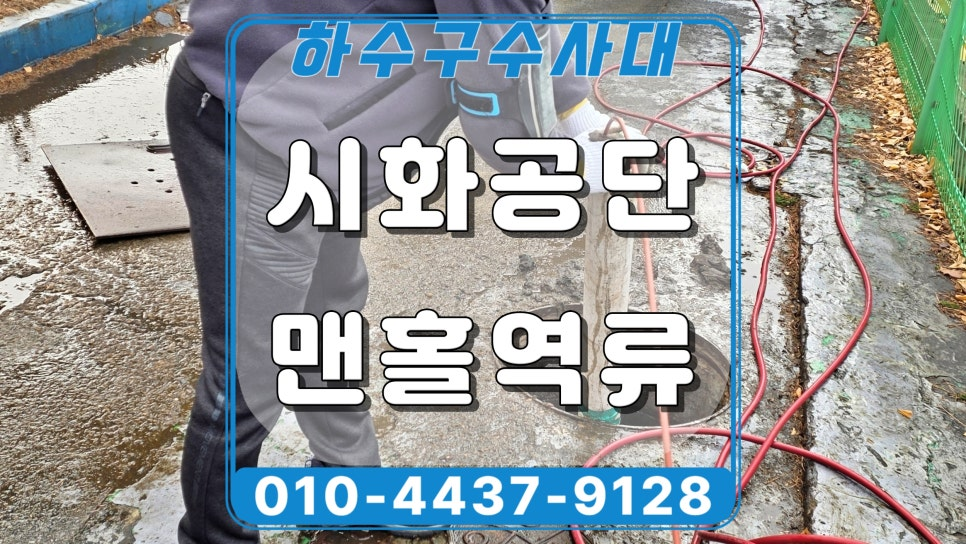
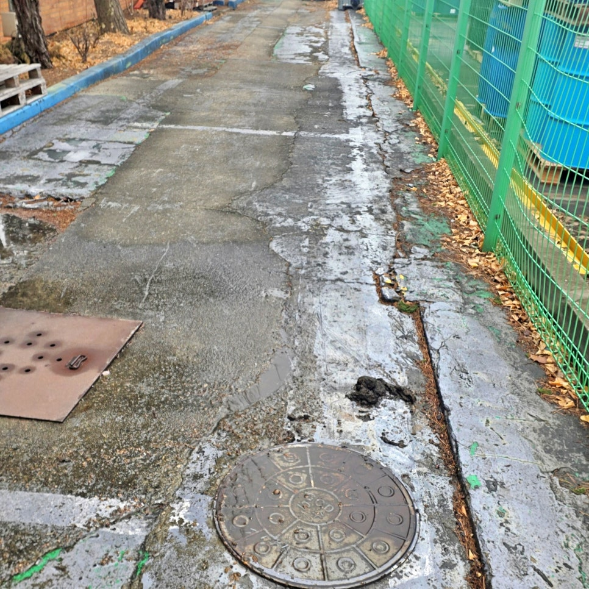
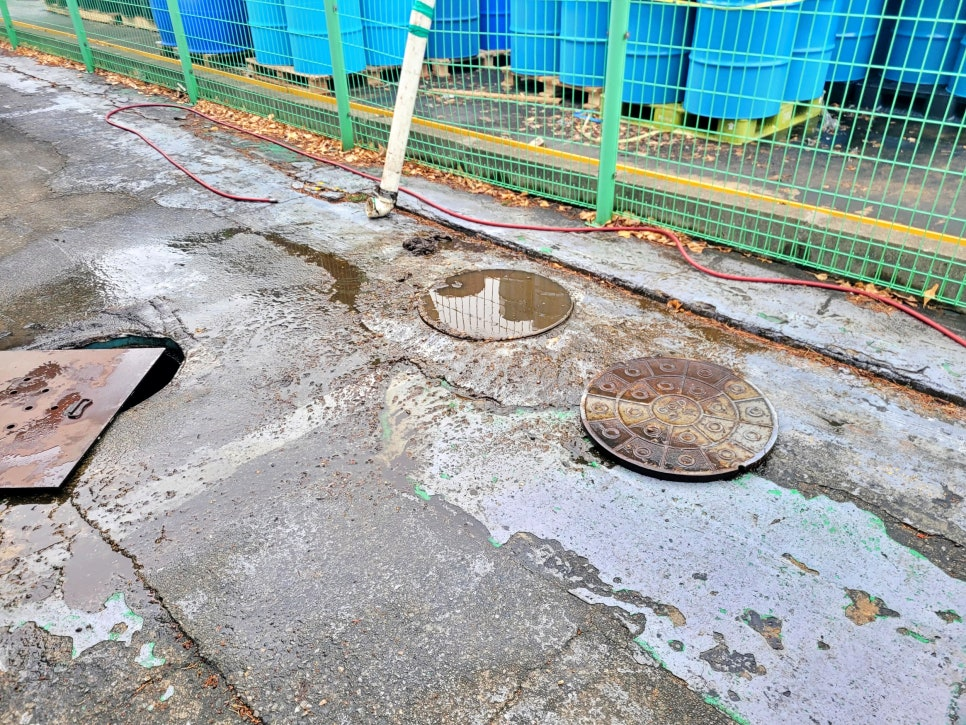
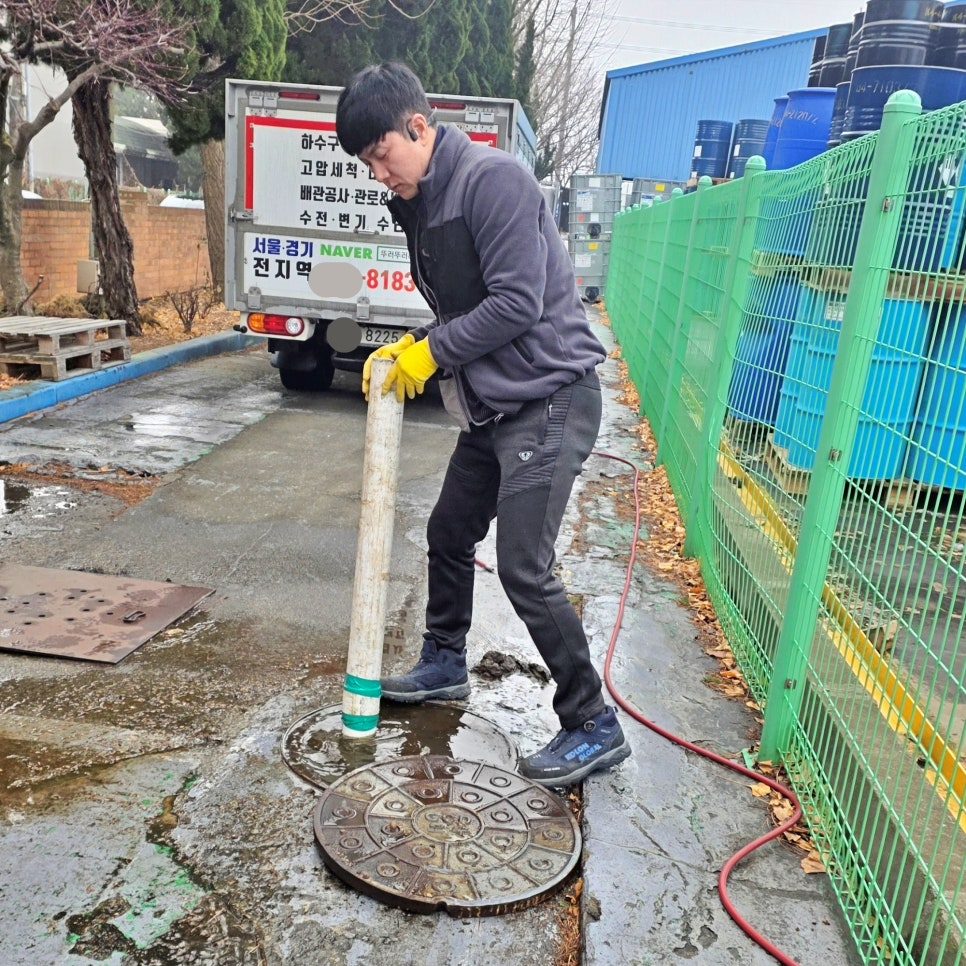
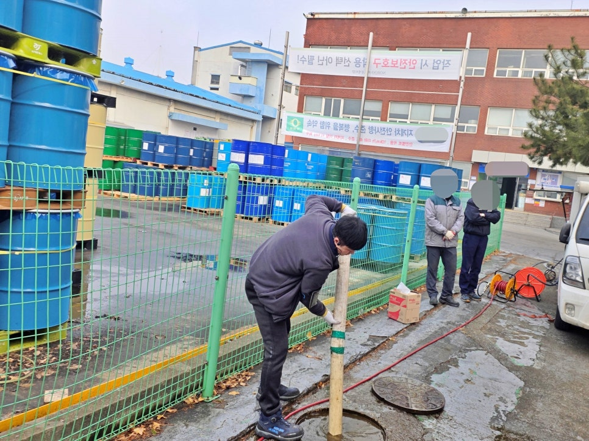
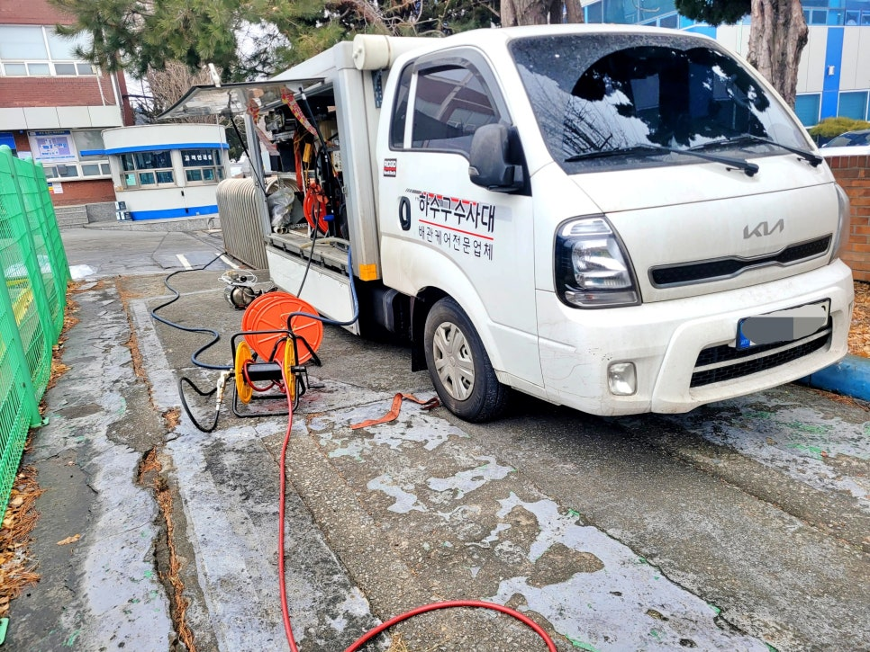
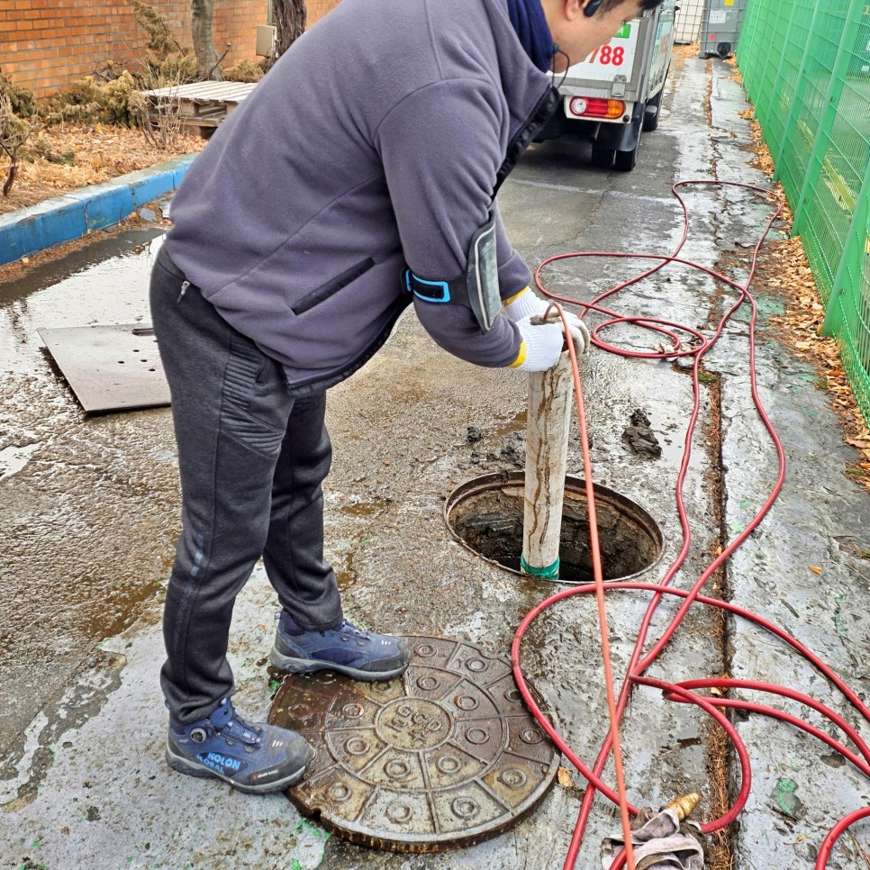

🏠 안산 성곡동 시화공단 맨홀역류, 물티슈 막힘 고압세척으로 해결
안산 하수구막힘 전문 시공 후기

📋 작업 개요
- 위치: 안산
- 서비스 유형: 하수구막힘, 배관막힘, 맨홀막힘, 역류해결, 뚫는업체, 배관청소, 고압세척
- 작업 일시: 2026. 2. 26. 16:42
- 업체명: 하수구수사대 (010-5615-2118)
🔍 문제 상황
안산 성곡동 시화공단 맨홀역류
물티슈 막힘 고압세척 청소로
뚫어드렸어요.
반갑습니다.
안산 단원구 시화공단 맨홀역류
고압세척 전문업체 하수구수사대
인사드립니다.
이번에 소개할 포스팅 내용은
안산 성곡동 시화공단 공장에서
맨홀역류로 물이 넘친다는 긴급
연락을 받고 출동한 사례입니다.
안산 성곡동 시화공단 맨홀역류 현장
현장에 도착해 보니 맨홀 주변으로
물이 넘쳐 흘러 바닥까지 넘쳐 있는
상태였는데요.
안산 성곡동 시화공단 맨홀 뚜껑을
열고 내부를 점검했지만 화면처럼
물이 가득 차 있어 정확한 출수구
위치를 파악하기 어려웠습니다.
그럼 지금부터 왜 이러한 문제가
발생했고 어떻게 해결했는지

🔎 원인 분석
💡 전문가 진단: 안산 성곡동 시화공단 맨홀역류물티슈 막힘 고압세척 청소로뚫어드렸어요.
과정을 상세히 소개하겠습니다.
성곡동 시화공단 맨홀역류 원인은?
고압세척 청소 작업 준비 과정
단원구 시화공단 맨홀역류 현장과
같은 경우에는 단계적인 접근 방식이
필요하기 때문에 우선 담당자로부터
배관 구조를 자세히 확인한 후
고압세척 장비를 준비했는데요.
관계 담당자 입회 하에 고압세척 진행함
참고로
단원구 시화공단 현장은 차량 이동과
작업 환경을 고려해야 하므로 주변
정리를 먼저 진행하고 안전 점검을
마친 뒤 본격적인 고압세척 작업에
들어갔습니다.
뚫어야할 배관 길이는 약 50미터
이상으로 길게 연결되어 있었으며
구배까지 좋지 않은 구조라 오물이
쉽게 쌓이는 조건을 갖추고 있었고요.
고압세척 노즐을 삽관 배관에 투입해
출수구 방향을 찾아내고 진행시켜
하수관 내부 청소를 시작했습니다.

🔧 작업 과정
성곡동 시화공단 맨홀역류 고압세척
과정 중 슬러지와 함께 많은 물티슈가
흘러나왔는데요.
바로 이 물티슈가 맨홀역류의 주요
원인이었던 것입니다.
물티슈는 쉽게 분해되지 않아 산업
현장에서 흔하게 발생하는 막힘의
원인 중 하나이기 때문에 하수관
내부로 유입되지 않도록 유의하는
것이 가장 중요합니다.
잠시 후
고압세척 노즐이 점차 진입하자 막힘
구간이 서서히 뚫리면서 맨홀 내부에
고여 있던 오수는 매우 빠른 속도로
배출되기 시작했고요.
고압세척 청소로 맨홀 바닥이 드러남
바로 이어서
건물 방향으로 고압세척 노즐을 다시
투입해 청소를 시작해 배관 내부에
쌓였던 오물과 물티슈를 제거했으며
마침내 위 화면과 같이 맨홀 바닥이
모습을 드러나게 되었습니다.
맨홀 역류 하수관 청소를 마치며
마지막으로
공장 건물 내부로 들어가 많은 물을
흘려보내는 배수 테스트를 실시해
오수 맨홀까지 시원하게 유입되고
배출되는 전과정을 관계자 분들과
함께 확인했는데요.
오늘 소개한
안산 성곡동 시화공단 지역은 물
사용량이 많아 작은 막힘에도 큰
문제로 이어질 수 있기 때문에
정기적인 고압세척 청소 관리가


✅ 작업 완료
중요하며, 만약 반복되는 맨홀 역류나
하수구 배관막힘 문제가 있다면 바로
하수구수사대를 불러 주십시오.
지금까지
"안산 성곡동 시화공단 맨홀역류,
물티슈 막힘 고압세척으로 해결"
후기를 끝까지 읽어주셔서 감사
드립니다.
#안산단원구맨홀역류 #안산시화공단맨홀역류전문 #안산시화공단맨홀청소업체 #안산성곡동시화공단맨홀역류 #성곡동맨홀역류청소 #안산시화공단고압세척전무 #안산공단맨홀고압청소업체 #안산성곡동공장맨홀역류




⚠️ 하수구 배관 막힘 예방 및 관리 가이드
- ✅ 머리카락, 비닐, 물티슈 등 물에 분해되지 않는 이물질은 하수구 유입을 절대 금지해 주세요.
- ✅ 하수구 거름망을 씌우고 모여진 이물질은 주기적으로 쓰레기통에 바로 비워주셔야 합니다.
- ✅ 배관 노후가 심할 경우 이물질이 더 쉽게 걸리므로 주기적인 배관 세척(고압세척 등)을 권장합니다.
- ✅ 작업 후 1년 이내 재발 시 하수구수사대에서 무상 A/S 보증 서비스를 제공합니다.
💡 핵심 정리
- 확실한 장비 작업(내시경 점검 및 샤프트 스케일링)으로 원인을 뿌리 뽑습니다.
- 작업 후 1년 이내에 동일한 부위 재발 시 100% 무상 A/S 서비스를 보장합니다.
- 서울 · 경기 · 인천 전 지역에 24시간 언제든 긴급 출동할 수 있도록 항시 대기 중입니다.
❓ 자주 묻는 질문 (FAQ)
🚨 안산 하수구막힘 문제로 고민이신가요?
정확한 원인 진단과 확실한 시공으로 재발 없는 해결을 약속드립니다.
24시간 긴급 출동 | 서울 · 경기 · 인천 전지역 | 1년 내 재발 시 무상 A/S